White Buffalo Healing Arts: massage therapy in Harrisonburg, Virginia
Services and rates
Each session draws on the modalities I'm trained in: hot stones, Swedish, deep tissue, sports injury rehabilitation, lymphatic drainage, joint mobilization, reflexology, and reiki. If you prefer, we can focus on just one.
Therapeutic massage
Individualized to your needs, with the aim of deep relaxation, release, and relief.
- 30 minutes$55
- 60 minutes$85
- 90 minutes$115
- 120 minutes$150
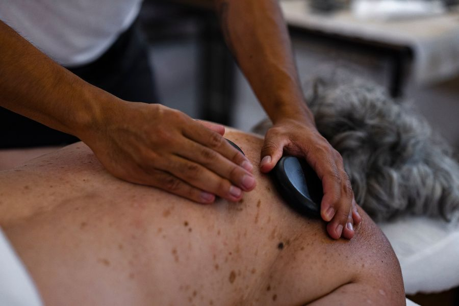
Energy work
Reiki and reflexology to promote flow, balance, and openness in the energetic body.
- 30 minutes$40
- 50 minutes$60
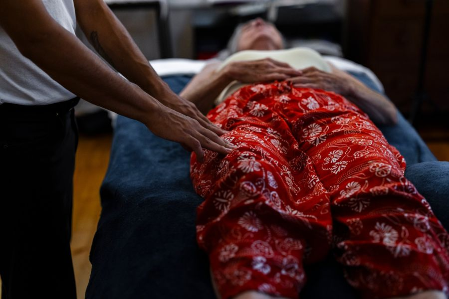
Joint mobilization
A clothes-on option with gentle stretching to aid range of motion. Deeply relaxing, and similar to Thai massage.
- 30 minutes$50
- 60 minutes$80
- 90 minutes$110
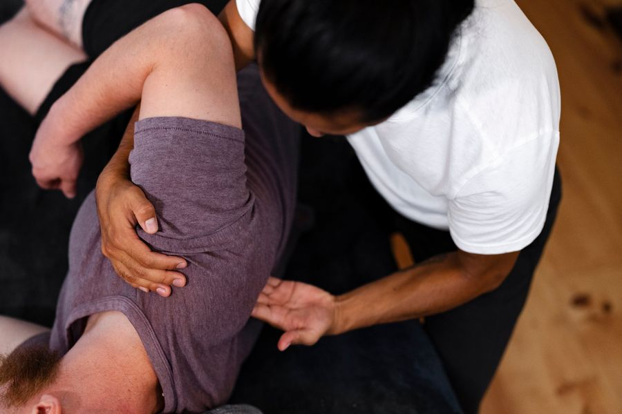
Gift certificates are available.
I want my work to be available to everyone, so I offer a sliding scale for 30, 60, and 90 minute sessions. Read about the sliding scale.
Book a sessionGallery
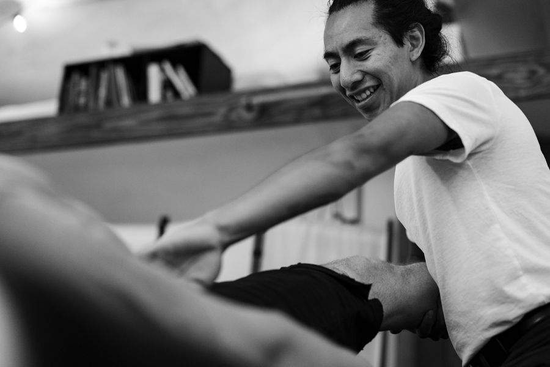
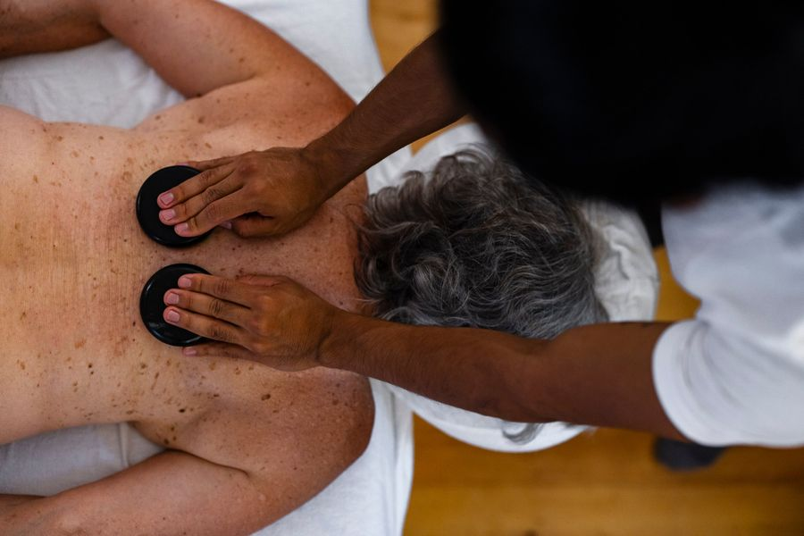
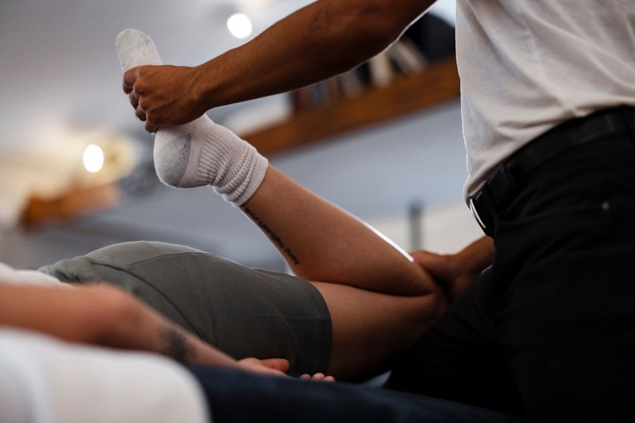
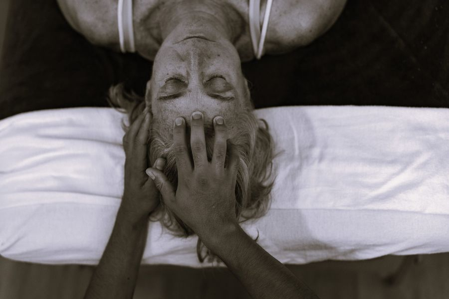
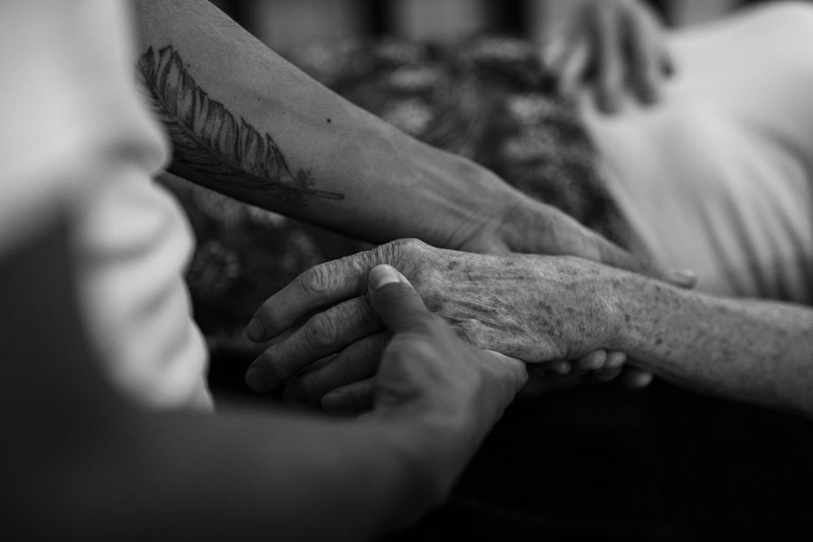
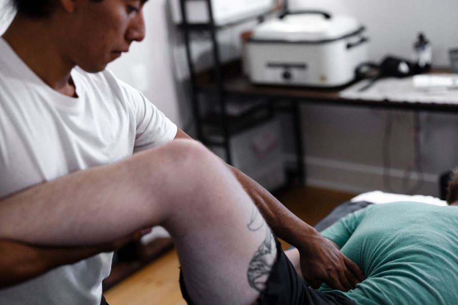
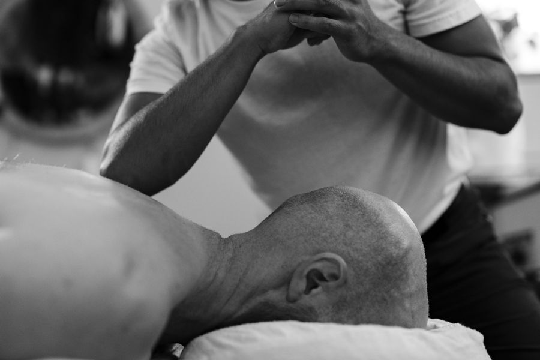
Photography by Jess Daddio
About Me
Licensed Massage Therapist and Reiki Practitioner.
I believe everyone has a natural state of being that is vibrant and loving. We can lose touch with it through injury, stress, chronic health issues, or simply living in a society that doesn't encourage self-connection. My wish is to create a safe, supportive, and comfortable space where the body can let go of heavy baggage and return to balance.
The mind-body-spirit connection is at the center of my work. I see the body as a guide and messenger for holistic health, and my job is to listen and respond to what each person needs, so every session is different.
Away from the table you'll find me running in the mountains, admiring flowers, or riding my bike around town.
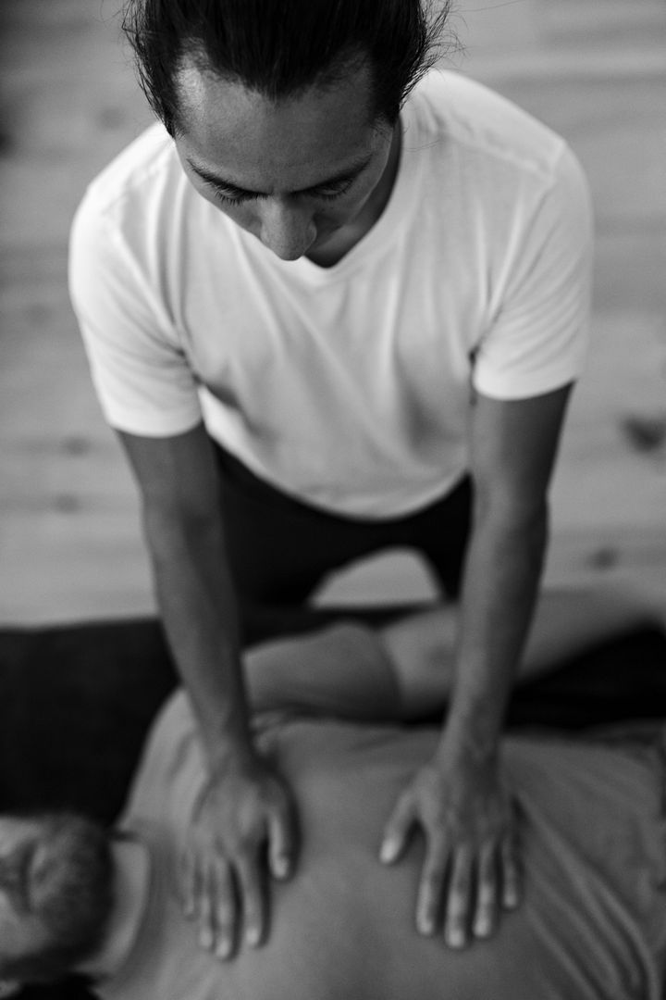
Frequently asked questions
I booked my first appointment. How should I prepare?
Thanks for booking! You can speed up your first visit by filling out the online intake form sent to your email. If you haven't had a chance, please arrive 10 to 15 minutes early.
What forms of payment do you accept?
Credit/debit card, cash, check, Venmo.
Can I add energy work to my massage?
Yes, I see massage and energy work as intertwined. Therefore when I perform a massage I may also incorporate energy work wherever I find it to be beneficial.
I have allergies and chemical sensitivities. What products do you use?
I keep my space as free of allergens as I can and always use hypoallergenic products. Current products:
- Biotone Pure Touch Organics Massage Creme
- Palma Christi Organic Castor Oil
- Pure Shenandoah CBD Massage Oil*
- Pure Shenandoah CBD Muscle Balm*
*The CBD products contain scents that can irritate sensitive individuals. I always ask permission before using them.
I reached out but haven't heard back. What should I do?
I aim to reply within 24 to 48 hours. If you emailed, check your spam folder. I get a lot of spam calls, so if you called without leaving a voicemail, I may have assumed it was spam. Please leave a message or send a text. Occasionally life gets in the way, I'll get back to you as soon as I can.
Contact
- Address
- 2505 Evelyn Byrd Ave, Suite B
Harrisonburg, VA 22801 - whitebuffalohealingarts@gmail.com
- Phone
- (540) 331-0649
- @whitebuffalohealingarts